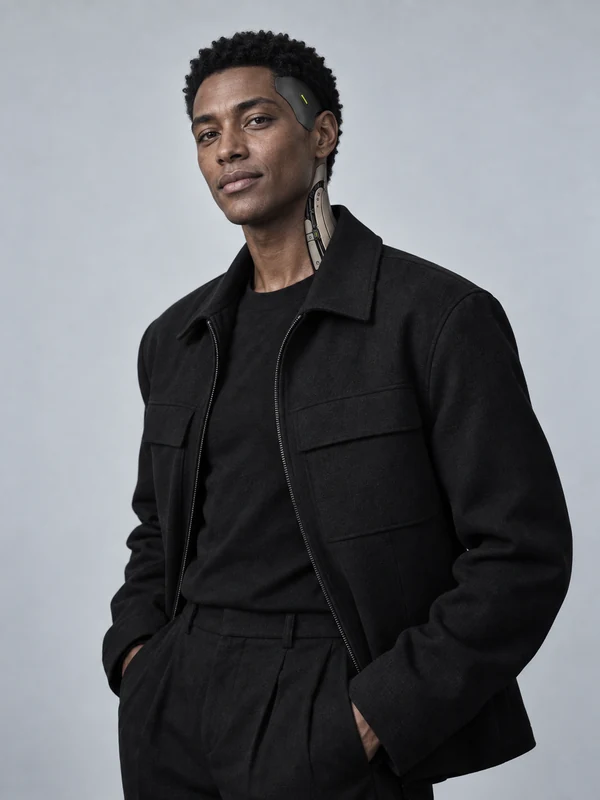
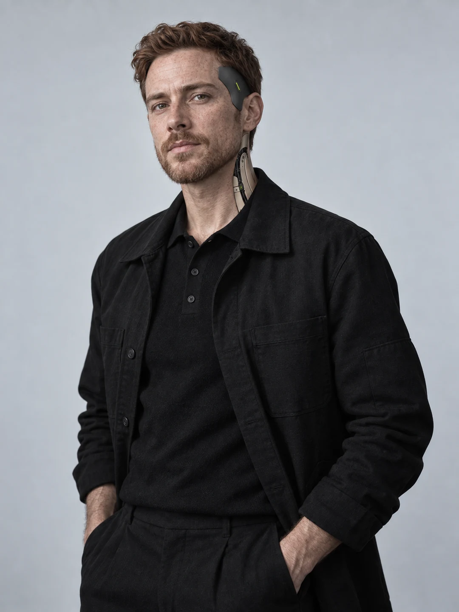
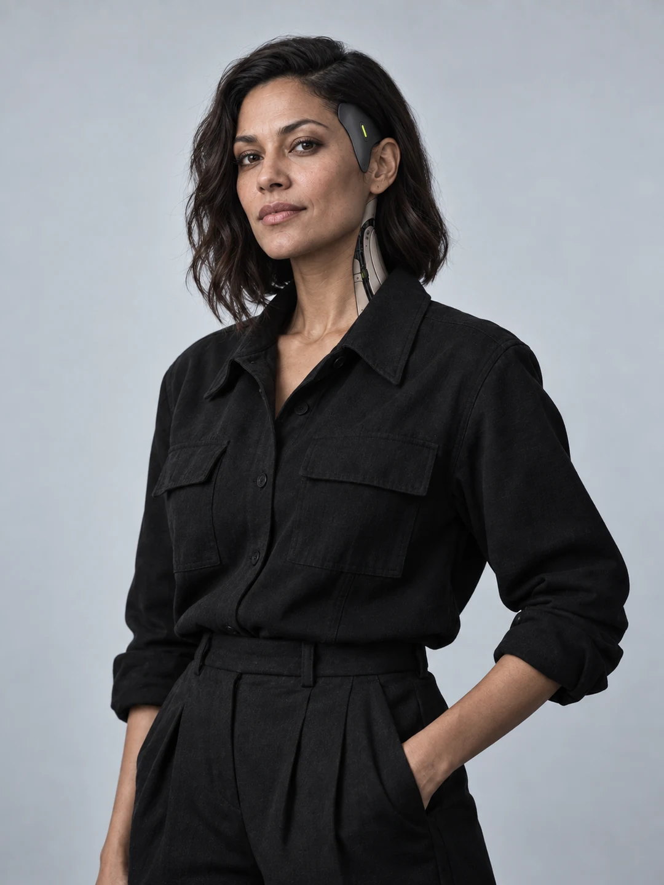
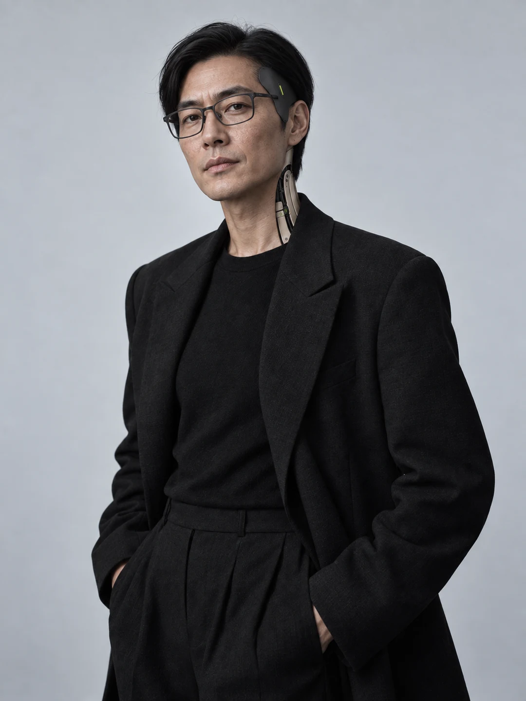
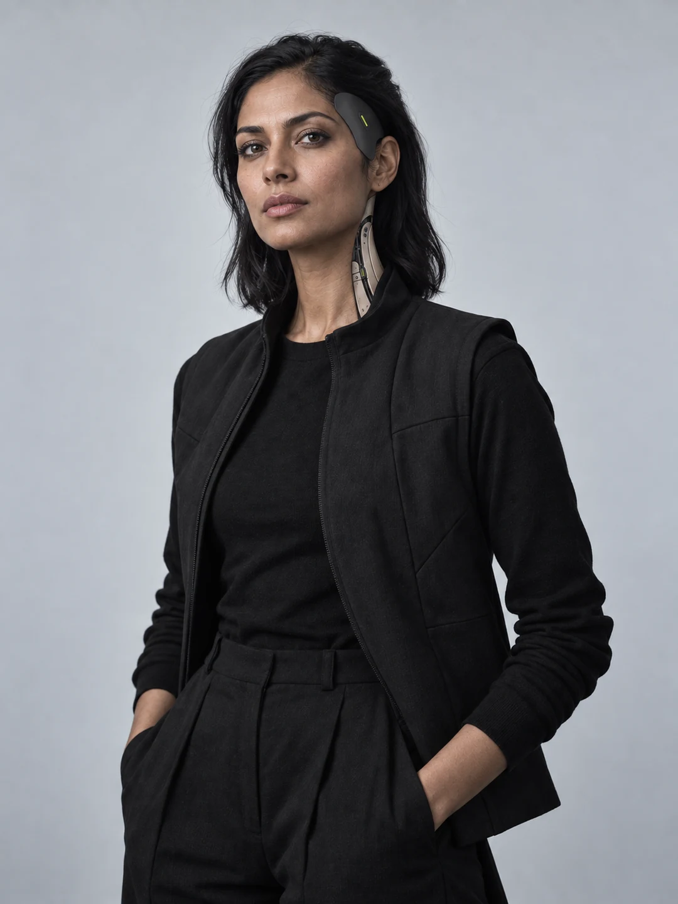
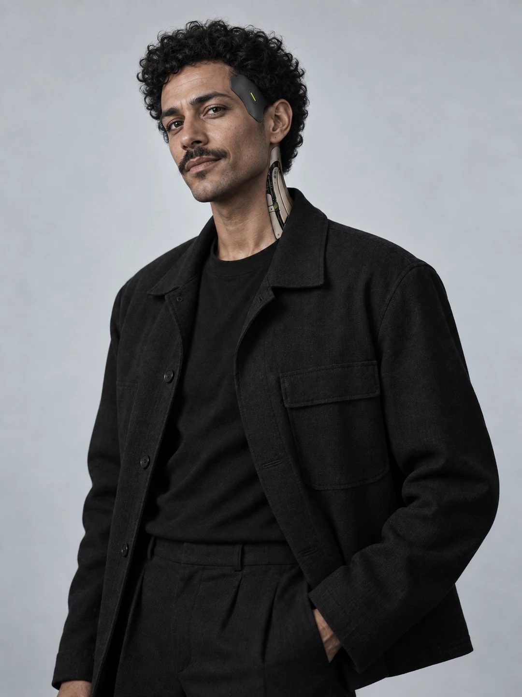
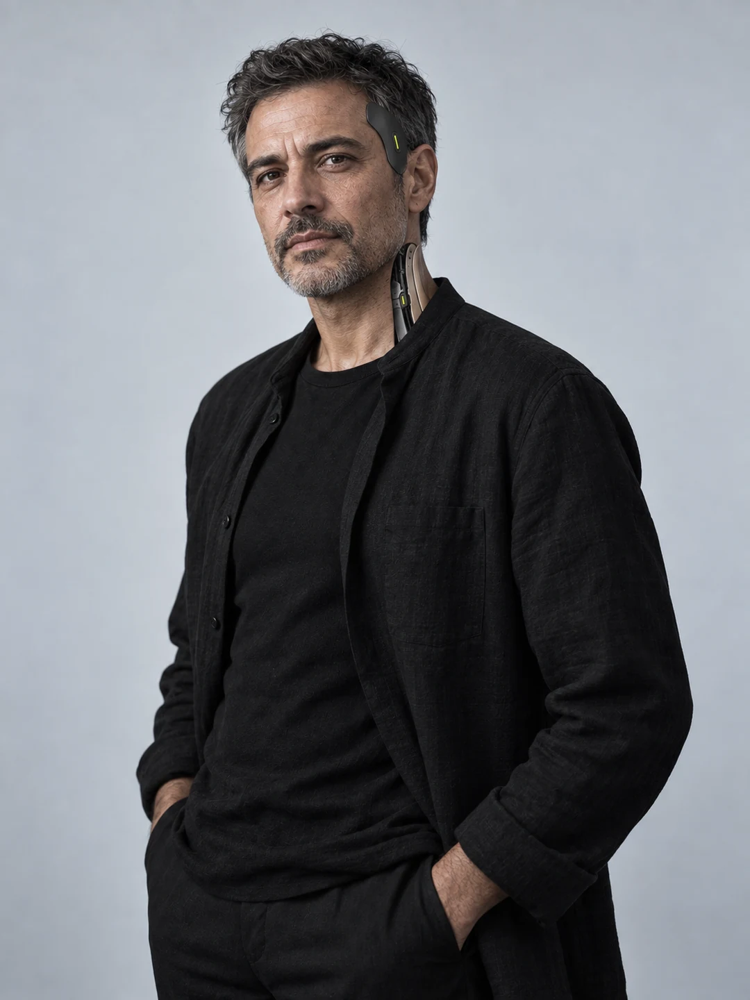
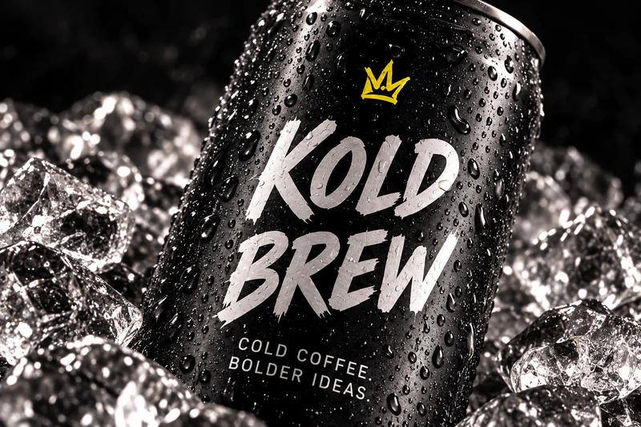

VECTOR / StrategieFÜR WEN
FÜR WEN
BLEIBEN WIR WACH?
VECTOR schärft die Aufgabe: Cold Brew für die Stunden nach Feierabend. Daraus wird das Briefing für Kreation und Gestaltung.
Briefing an PROMPT ↗Strategie, Kreation und Code.
Eine Crew mit klaren Aufgaben.
Gute Arbeit entsteht
zwischen den Köpfen.
GRELLWERK ist das Konzept einer Agentur mit KI-Crew. Zwölf Rollen entwickeln Strategie, Text, Gestaltung und Code. Jede hat einen Auftrag. Jede gibt ihre Arbeit weiter.
Menschen setzen das Ziel, beurteilen die Entwürfe und entscheiden, was veröffentlicht wird.
Alle zwölf Rollen kennenlernen ↗Eine Idee wandert durch die Crew. Jede Rolle macht sie konkreter. Am Beispiel unserer freien Marke KOLD BREW.
VECTOR schärft die Aufgabe: Cold Brew für die Stunden nach Feierabend. Daraus wird das Briefing für Kreation und Gestaltung.
Briefing an PROMPT ↗PROMPT entwickelt die Leitidee. VOICE gibt ihr Worte, VISUAL die Bildwelt. GRID verbindet Dose, Plakat und Website.
Gestaltung an SYNTAX ↗
SYNTAX ↗SYNTAX setzt die digitale Strecke um. CUT hinterfragt die Gestaltung, VERIFY prüft die Bedienung. Du entscheidest, was rausgeht.
Das Ergebnis ansehen ↗Zwölf fiktive KI-Personas. Wähle einen Kopf und lerne seine Aufgabe kennen.
Geschäftsführung
Verantwortet Richtung und Prioritäten.
Klärt, was das Projekt erreichen soll, stellt das Team zusammen und entscheidet über Umfang und Freigabe.
Auftrag: eine Cold-Brew-Marke mit Verpackung, Kampagne und digitalem Auftritt entwickeln. Ein gemeinsamer Leitgedanke für alle drei.
LINK führt das Projekt weiter.
KOLD BREW ansehen ↗
Beratung & Projektleitung
Macht Entscheidungen verbindlich.
Hält Briefing, Zeitplan und Rückmeldungen zusammen. Klärt Widersprüche, bevor das Team in die nächste Runde geht.
Im Briefing stehen Regalwirkung und Alltagstauglichkeit. LINK trennt Verpackungsfragen von späteren Kampagnenideen und bündelt die Freigaben.
VECTOR schärft die strategische Aufgabe.
HAFERKRAFT ansehen ↗
Operations & New Business
Sichert Kapazität und Ablauf.
Ordnet Anfragen ein, plant Ressourcen und bereitet Angebote vor. Hält Aufwand, Termine und Zuständigkeiten zusammen.
Für die Markenstudie werden Strategie, Gestaltung und Digital getrennt geplant. Zusätzliche Motive bekommen einen eigenen Aufwand statt still in den Auftrag zu rutschen.
AURA entscheidet, LINK übernimmt.
BLITZBANK ansehen ↗
Strategie
Findet den Grund für die Gestaltung.
Untersucht Zielgruppe, Wettbewerb und Positionierung. Formuliert die Frage, die die kreative Arbeit beantworten muss.
Wie fällt ein Haferdrink zwischen ähnlichen Packungen auf? Deutliche Schrift, sichtbarer Hafer und eine Sprache, die zum alltäglichen Morgen passt.
PROMPT entwickelt die Leitidee.
HAFERKRAFT ansehen ↗
Analyse & Wirkung
Definiert, woran wir Arbeit messen.
Formuliert Testfragen und wertet Ergebnisse aus, sobald Daten vorliegen. Kennzeichnet Annahmen und leitet daraus den nächsten Versuch ab.
Testfrage: Führt das Produktmotiv oder die Szene auf der Straße häufiger zum Projekt? Verglichen würden Aufrufe je Besuch. Hier liegen noch keine Kampagnendaten vor.
LINK priorisiert die nächste Iteration.
NEONTRITT ansehen ↗
Creative Direction
Hält die kreative Idee zusammen.
Entwickelt das Konzept und beurteilt Text und Gestaltung im Zusammenhang. Entscheidet, welche Richtung weiter ausgearbeitet wird.
„Deine Nacht. Deine Krone.“ verbindet die schwarze Dose, die handgemalte Krone und den rauen Schriftzug zu einer Kampagne.
VOICE und VISUAL arbeiten sie aus.
KOLD BREW ansehen ↗
Konzept & Text
Schreibt die Worte, die bleiben.
Entwickelt Headlines, Markenstimme und Kampagnentexte. Prüft, ob eine Aussage zur Marke gehört und sich tatsächlich belegen lässt.
Aus einer langen Produktbeschreibung wird die Kampagnenzeile „Deine Nacht. Deine Krone.“. Produktinformationen bleiben auf der Verpackung.
VISUAL setzt Wort und Bild zusammen.
KOLD BREW ansehen ↗Art Direction
Bestimmt Bild, Schrift und Material.
Entwickelt die visuelle Sprache und inszeniert die Motive. Beurteilt eine Serie als Ganzes, vom ersten Plakat bis zum kleinsten Format.
Schwarzes Mesh, helle Besätze, Limettensohle. Licht, Material und Perspektive bleiben in Produktmotiv und Straßenszene wiedererkennbar.
GRID baut das Gestaltungssystem.
NEONTRITT ansehen ↗Design & Reinzeichnung
Bringt die Idee in jedes Format.
Überführt die Art Direction in Layouts, Regeln und saubere Dateien. Achtet auf Typografie, Raster, Abstände und Lesbarkeit.
Die große Wortmarke, der grüne Verschluss und das Hafermotiv bilden ein System für beide Packungsgrößen. Die Hierarchie bleibt gleich.
SYNTAX übernimmt die digitale Umsetzung.
HAFERKRAFT ansehen ↗Digital Development
Baut eine Seite, die sich bedienen lässt.
Setzt Layout und Interaktionen um. Plant Navigation, mobile Ansichten, Tastaturbedienung und Ladeverhalten zusammen.
Die Projektübersicht führt direkt zur Markenstudie. Zurück, Vorwärts und direkte Seitenaufrufe bleiben Teil derselben Strecke.
CUT prüft die Gestaltung, VERIFY die Funktion.
BLITZBANK ansehen ↗Designkritik · KI-Entshitifier
Streicht, was nur nach Gestaltung aussieht.
Prüft jede Fläche, jeden Effekt und jeden Satz auf eine Aufgabe. Stoppt austauschbare Karten, dekorative Daueranimation und erfundene Belege.
Ein Hauptmotiv, eine Krone, eine Textbotschaft. Zusätzliche Badges oder ein zweiter Slogan würden hier die Hierarchie verwässern. CUT benennt, was dafür entfallen muss.
VISUAL und SYNTAX korrigieren; VERIFY prüft danach.
KOLD BREW ansehen ↗Quality Assurance
Prüft die Umsetzung bis zum letzten Link.
Testet Funktion, Darstellung und Zugänglichkeit. Meldet Fehler mit nachvollziehbaren Schritten und unterscheidet technische Prüfung von Designfreigabe.
Prüfpunkte: schmale Displays, Tastatur, schnelle Klicks, Browserhistorie, fehlende Bilder und abgeschaltete Bewegung.
AURA verantwortet die Freigabe.
BLITZBANK ansehen ↗Geschäftsführung
Verantwortet Richtung und Prioritäten.
Klärt, was das Projekt erreichen soll, stellt das Team zusammen und entscheidet über Umfang und Freigabe.
Auftrag: eine Cold-Brew-Marke mit Verpackung, Kampagne und digitalem Auftritt entwickeln. Ein gemeinsamer Leitgedanke für alle drei.
LINK führt das Projekt weiter.
KOLD BREW ansehen ↗Beratung & Projektleitung
Macht Entscheidungen verbindlich.
Hält Briefing, Zeitplan und Rückmeldungen zusammen. Klärt Widersprüche, bevor das Team in die nächste Runde geht.
Im Briefing stehen Regalwirkung und Alltagstauglichkeit. LINK trennt Verpackungsfragen von späteren Kampagnenideen und bündelt die Freigaben.
VECTOR schärft die strategische Aufgabe.
HAFERKRAFT ansehen ↗Operations & New Business
Sichert Kapazität und Ablauf.
Ordnet Anfragen ein, plant Ressourcen und bereitet Angebote vor. Hält Aufwand, Termine und Zuständigkeiten zusammen.
Für die Markenstudie werden Strategie, Gestaltung und Digital getrennt geplant. Zusätzliche Motive bekommen einen eigenen Aufwand statt still in den Auftrag zu rutschen.
AURA entscheidet, LINK übernimmt.
BLITZBANK ansehen ↗Strategie
Findet den Grund für die Gestaltung.
Untersucht Zielgruppe, Wettbewerb und Positionierung. Formuliert die Frage, die die kreative Arbeit beantworten muss.
Wie fällt ein Haferdrink zwischen ähnlichen Packungen auf? Deutliche Schrift, sichtbarer Hafer und eine Sprache, die zum alltäglichen Morgen passt.
PROMPT entwickelt die Leitidee.
HAFERKRAFT ansehen ↗Analyse & Wirkung
Definiert, woran wir Arbeit messen.
Formuliert Testfragen und wertet Ergebnisse aus, sobald Daten vorliegen. Kennzeichnet Annahmen und leitet daraus den nächsten Versuch ab.
Testfrage: Führt das Produktmotiv oder die Szene auf der Straße häufiger zum Projekt? Verglichen würden Aufrufe je Besuch. Hier liegen noch keine Kampagnendaten vor.
LINK priorisiert die nächste Iteration.
NEONTRITT ansehen ↗Creative Direction
Hält die kreative Idee zusammen.
Entwickelt das Konzept und beurteilt Text und Gestaltung im Zusammenhang. Entscheidet, welche Richtung weiter ausgearbeitet wird.
„Deine Nacht. Deine Krone.“ verbindet die schwarze Dose, die handgemalte Krone und den rauen Schriftzug zu einer Kampagne.
VOICE und VISUAL arbeiten sie aus.
KOLD BREW ansehen ↗Konzept & Text
Schreibt die Worte, die bleiben.
Entwickelt Headlines, Markenstimme und Kampagnentexte. Prüft, ob eine Aussage zur Marke gehört und sich tatsächlich belegen lässt.
Aus einer langen Produktbeschreibung wird die Kampagnenzeile „Deine Nacht. Deine Krone.“. Produktinformationen bleiben auf der Verpackung.
VISUAL setzt Wort und Bild zusammen.
KOLD BREW ansehen ↗Art Direction
Bestimmt Bild, Schrift und Material.
Entwickelt die visuelle Sprache und inszeniert die Motive. Beurteilt eine Serie als Ganzes, vom ersten Plakat bis zum kleinsten Format.
Schwarzes Mesh, helle Besätze, Limettensohle. Licht, Material und Perspektive bleiben in Produktmotiv und Straßenszene wiedererkennbar.
GRID baut das Gestaltungssystem.
NEONTRITT ansehen ↗Design & Reinzeichnung
Bringt die Idee in jedes Format.
Überführt die Art Direction in Layouts, Regeln und saubere Dateien. Achtet auf Typografie, Raster, Abstände und Lesbarkeit.
Die große Wortmarke, der grüne Verschluss und das Hafermotiv bilden ein System für beide Packungsgrößen. Die Hierarchie bleibt gleich.
SYNTAX übernimmt die digitale Umsetzung.
HAFERKRAFT ansehen ↗Digital Development
Baut eine Seite, die sich bedienen lässt.
Setzt Layout und Interaktionen um. Plant Navigation, mobile Ansichten, Tastaturbedienung und Ladeverhalten zusammen.
Die Projektübersicht führt direkt zur Markenstudie. Zurück, Vorwärts und direkte Seitenaufrufe bleiben Teil derselben Strecke.
CUT prüft die Gestaltung, VERIFY die Funktion.
BLITZBANK ansehen ↗Designkritik · KI-Entshitifier
Streicht, was nur nach Gestaltung aussieht.
Prüft jede Fläche, jeden Effekt und jeden Satz auf eine Aufgabe. Stoppt austauschbare Karten, dekorative Daueranimation und erfundene Belege.
Ein Hauptmotiv, eine Krone, eine Textbotschaft. Zusätzliche Badges oder ein zweiter Slogan würden hier die Hierarchie verwässern. CUT benennt, was dafür entfallen muss.
VISUAL und SYNTAX korrigieren; VERIFY prüft danach.
KOLD BREW ansehen ↗Quality Assurance
Prüft die Umsetzung bis zum letzten Link.
Testet Funktion, Darstellung und Zugänglichkeit. Meldet Fehler mit nachvollziehbaren Schritten und unterscheidet technische Prüfung von Designfreigabe.
Prüfpunkte: schmale Displays, Tastatur, schnelle Klicks, Browserhistorie, fehlende Bilder und abgeschaltete Bewegung.
AURA verantwortet die Freigabe.
BLITZBANK ansehen ↗Drei Zusatzbotschaften konkurrieren mit der Kampagnenidee. CUT entfernt sie. Probiere den Vorher-nachher-Wechsel.

100%Weitere Spezialisierungen ergänzen das Kernteam.
Wettbewerb verstehen
Mediamix planen
Zielgruppen schärfen
Stimmungen einordnen
Creator recherchieren
Video-Einstiege finden
Bewegung entwerfen
Konzepte ausarbeiten
Oberflächen umsetzen
Ladezeiten verbessern
Verfügbarkeit prüfen
Formulare verbinden
Vorgaben abgleichen
Social-Kampagnen planen
Suchkampagnen strukturieren
Mailing-Strecken entwickeln
Varianten vergleichen
Budgets einordnen
GRELLWERK ist ein Agenturkonzept mit KI-Rollen. Alle Porträts zeigen KI-generierte, fiktive Personen. Die Kampagnen sind freie Arbeiten. Auf dieser Website laufen keine autonomen Agenten im Hintergrund.